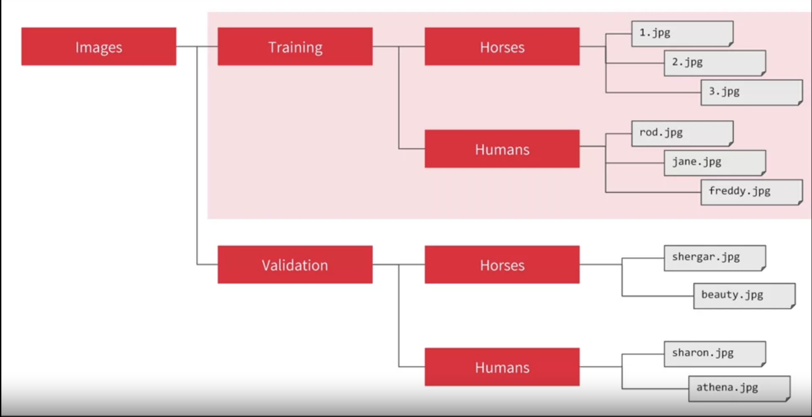

Code
import urllib.request
urllib.request.urlretrieve("https://storage.googleapis.com/tensorflow-1-public/course2/week3/horse-or-human.zip", "horse-or-human.zip")by Laurence Moroney
import urllib.request
urllib.request.urlretrieve("https://storage.googleapis.com/tensorflow-1-public/course2/week3/horse-or-human.zip", "horse-or-human.zip")import urllib.request
urllib.request.urlretrieve("https://storage.googleapis.com/tensorflow-1-public/course2/week3/validation-horse-or-human.zip", "validation-horse-or-human.zip")import zipfile
#| eval: false
# Unzip training set
local_zip = './horse-or-human.zip'
zip_ref = zipfile.ZipFile(local_zip, 'r')
zip_ref.extractall('./horse-or-human')
# Unzip validation set
local_zip = './validation-horse-or-human.zip'
zip_ref = zipfile.ZipFile(local_zip, 'r')
zip_ref.extractall('./validation-horse-or-human')
zip_ref.close()from PIL import Image
im = Image.open('./horse-or-human/horses/horse01-0.png')
im.size # (width,height) (300, 300)import os
# Directory with training horse pictures
train_horse_dir = os.path.join('./horse-or-human/horses')
# Directory with training human pictures
train_human_dir = os.path.join('./horse-or-human/humans')
# Directory with validation horse pictures
validation_horse_dir = os.path.join('./validation-horse-or-human/horses')
# Directory with validation human pictures
validation_human_dir = os.path.join('./validation-horse-or-human/humans')train_horse_names = os.listdir(train_horse_dir)
print(f'TRAIN SET HORSES: {train_horse_names[:10]}')
train_human_names = os.listdir(train_human_dir)
print(f'TRAIN SET HUMANS: {train_human_names[:10]}')
validation_horse_names = os.listdir(validation_horse_dir)
print(f'VAL SET HORSES: {validation_horse_names[:10]}')
validation_human_names = os.listdir(validation_human_dir)
print(f'VAL SET HUMANS: {validation_human_names[:10]}')TRAIN SET HORSES: ['horse43-5.png', 'horse06-5.png', 'horse20-6.png', 'horse04-7.png', 'horse41-7.png', 'horse22-4.png', 'horse19-2.png', 'horse24-2.png', 'horse37-8.png', 'horse02-1.png']
TRAIN SET HUMANS: ['human17-22.png', 'human10-17.png', 'human10-03.png', 'human07-27.png', 'human09-22.png', 'human05-22.png', 'human02-03.png', 'human02-17.png', 'human15-27.png', 'human12-12.png']
VAL SET HORSES: ['horse1-204.png', 'horse2-112.png', 'horse3-498.png', 'horse5-032.png', 'horse5-018.png', 'horse1-170.png', 'horse5-192.png', 'horse1-411.png', 'horse4-232.png', 'horse3-070.png']
VAL SET HUMANS: ['valhuman04-20.png', 'valhuman03-01.png', 'valhuman04-08.png', 'valhuman03-15.png', 'valhuman01-04.png', 'valhuman01-10.png', 'valhuman01-11.png', 'valhuman01-05.png', 'valhuman03-14.png', 'valhuman03-00.png']print(f'total training horse images: {len(os.listdir(train_horse_dir))}')
print(f'total training human images: {len(os.listdir(train_human_dir))}')
print(f'total validation horse images: {len(os.listdir(validation_horse_dir))}')
print(f'total validation human images: {len(os.listdir(validation_human_dir))}')total training horse images: 500
total training human images: 527
total validation horse images: 128
total validation human images: 128import matplotlib.pyplot as plt
import matplotlib.image as mpimg
# Parameters for our graph; we'll output images in a 4x4 configuration
nrows = 4
ncols = 4
# Index for iterating over images
pic_index = 0
# Set up matplotlib fig, and size it to fit 4x4 pics
fig = plt.gcf()
fig.set_size_inches(ncols * 4, nrows * 4)
pic_index += 8
next_horse_pix = [os.path.join(train_horse_dir, fname)
for fname in train_horse_names[pic_index-8:pic_index]]
next_human_pix = [os.path.join(train_human_dir, fname)
for fname in train_human_names[pic_index-8:pic_index]]
for i, img_path in enumerate(next_horse_pix+next_human_pix):
# Set up subplot; subplot indices start at 1
sp = plt.subplot(nrows, ncols, i + 1)
sp.axis('Off') # Don't show axes (or gridlines)
img = mpimg.imread(img_path)
plt.imshow(img)
plt.show()
import tensorflow as tf
import numpy as np
from tensorflow import keras
import os
print(tf.__version__)2.16.1picture file structure

ImageDataGenerator: All images will be resized to 300x300
from tensorflow.keras.preprocessing.image import ImageDataGenerator
# All images will be rescaled by 1./255
train_datagen = ImageDataGenerator(rescale=1/255)
validation_datagen = ImageDataGenerator(rescale=1/255)
# Flow training images in batches of 128 using train_datagen generator
train_generator = train_datagen.flow_from_directory(
'./horse-or-human/', # This is the source directory for training images
target_size=(300, 300), # All images will be resized to 300x300
batch_size=128,
# Since you use binary_crossentropy loss, you need binary labels
class_mode='binary')
# Flow validation images in batches of 128 using validation_datagen generator
validation_generator = validation_datagen.flow_from_directory(
'./validation-horse-or-human/', # This is the source directory for validation images
target_size=(300, 300), # All images will be resized to 300x300
batch_size=32,
# Since you use binary_crossentropy loss, you need binary labels
class_mode='binary')Found 1027 images belonging to 2 classes.
Found 256 images belonging to 2 classes.input 300 by 300 color image
flow into 16 3by3 convolutional layers and 2by2 pooling
output is 1 neural(0/1) sigmoid function.its good for binary
import tensorflow as tf
model = tf.keras.models.Sequential([
# Note the input shape is the desired size of the image 300x300 with 3 bytes color
# This is the first convolution
tf.keras.layers.Conv2D(16, (3,3), activation='relu', input_shape=(300, 300, 3)),
tf.keras.layers.MaxPooling2D(2, 2),
# The second convolution
tf.keras.layers.Conv2D(32, (3,3), activation='relu'),
tf.keras.layers.MaxPooling2D(2,2),
# The third convolution
tf.keras.layers.Conv2D(64, (3,3), activation='relu'),
tf.keras.layers.MaxPooling2D(2,2),
# The fourth convolution
tf.keras.layers.Conv2D(64, (3,3), activation='relu'),
tf.keras.layers.MaxPooling2D(2,2),
# The fifth convolution
tf.keras.layers.Conv2D(64, (3,3), activation='relu'),
tf.keras.layers.MaxPooling2D(2,2),
# Flatten the results to feed into a DNN
tf.keras.layers.Flatten(),
# 512 neuron hidden layer
tf.keras.layers.Dense(512, activation='relu'),
# Only 1 output neuron. It will contain a value from 0-1 where 0 for 1 class ('horses') and 1 for the other ('humans')
tf.keras.layers.Dense(1, activation='sigmoid')
])# Print the model summary
model.summary()Model: "sequential"
┏━━━━━━━━━━━━━━━━━━━━━━━━━━━━━━━━━┳━━━━━━━━━━━━━━━━━━━━━━━━┳━━━━━━━━━━━━━━━┓ ┃ Layer (type) ┃ Output Shape ┃ Param # ┃ ┡━━━━━━━━━━━━━━━━━━━━━━━━━━━━━━━━━╇━━━━━━━━━━━━━━━━━━━━━━━━╇━━━━━━━━━━━━━━━┩ │ conv2d (Conv2D) │ (None, 298, 298, 16) │ 448 │ ├─────────────────────────────────┼────────────────────────┼───────────────┤ │ max_pooling2d (MaxPooling2D) │ (None, 149, 149, 16) │ 0 │ ├─────────────────────────────────┼────────────────────────┼───────────────┤ │ conv2d_1 (Conv2D) │ (None, 147, 147, 32) │ 4,640 │ ├─────────────────────────────────┼────────────────────────┼───────────────┤ │ max_pooling2d_1 (MaxPooling2D) │ (None, 73, 73, 32) │ 0 │ ├─────────────────────────────────┼────────────────────────┼───────────────┤ │ conv2d_2 (Conv2D) │ (None, 71, 71, 64) │ 18,496 │ ├─────────────────────────────────┼────────────────────────┼───────────────┤ │ max_pooling2d_2 (MaxPooling2D) │ (None, 35, 35, 64) │ 0 │ ├─────────────────────────────────┼────────────────────────┼───────────────┤ │ conv2d_3 (Conv2D) │ (None, 33, 33, 64) │ 36,928 │ ├─────────────────────────────────┼────────────────────────┼───────────────┤ │ max_pooling2d_3 (MaxPooling2D) │ (None, 16, 16, 64) │ 0 │ ├─────────────────────────────────┼────────────────────────┼───────────────┤ │ conv2d_4 (Conv2D) │ (None, 14, 14, 64) │ 36,928 │ ├─────────────────────────────────┼────────────────────────┼───────────────┤ │ max_pooling2d_4 (MaxPooling2D) │ (None, 7, 7, 64) │ 0 │ ├─────────────────────────────────┼────────────────────────┼───────────────┤ │ flatten (Flatten) │ (None, 3136) │ 0 │ ├─────────────────────────────────┼────────────────────────┼───────────────┤ │ dense (Dense) │ (None, 512) │ 1,606,144 │ ├─────────────────────────────────┼────────────────────────┼───────────────┤ │ dense_1 (Dense) │ (None, 1) │ 513 │ └─────────────────────────────────┴────────────────────────┴───────────────┘
Total params: 1,704,097 (6.50 MB)
Trainable params: 1,704,097 (6.50 MB)
Non-trainable params: 0 (0.00 B)
# v2.11+ optimizer `tf.keras.optimizers.RMSprop` runs slowly on M1/M2 Macs
from tensorflow.keras.optimizers import RMSprop
model.compile(loss='binary_crossentropy',
optimizer=RMSprop(learning_rate=0.001),
metrics=['accuracy'])class myCallback(tf.keras.callbacks.Callback):
def on_epoch_end(self, epoch, logs={}):
'''
Halts the training when the loss falls below 0.15
Args:
epoch (integer) - index of epoch (required but unused in the function definition below)
logs (dict) - metric results from the training epoch
'''
# Check the loss
if(logs.get('loss') < 0.15):
# Stop if threshold is met
print("\nLoss is lower than 0.2 so cancelling training!")
print("cancelling training with:")
print(epoch+1)
self.model.stop_training = True
# Instantiate class
callbacks = myCallback()history = model.fit(
train_generator,
steps_per_epoch=8,
epochs=10,
verbose=0,
validation_data = validation_generator,
validation_steps=8,
callbacks=[callbacks])
Loss is lower than 0.2 so cancelling training!
cancelling training with:
10Prediction a validation horses
import numpy as np
from tensorflow.keras.utils import load_img, img_to_array
fn='horse1-241.png'
path = './validation-horse-or-human/horses/'+ fn
img = load_img(path, target_size=(300, 300))
x = img_to_array(img)
x /= 255
x = np.expand_dims(x, axis=0)
images = np.vstack([x])
classes = model.predict(images, batch_size=10)
print(classes[0])
if classes[0]>0.5:
print(fn+" is a human")
else:
print(fn+" is a horse")1/1 ━━━━━━━━━━━━━━━━━━━━ 0s 44ms/step1/1 ━━━━━━━━━━━━━━━━━━━━ 0s 45ms/step
[5.7587976e-11]
horse1-241.png is a horsePrediction a human from internet
import numpy as np
from tensorflow.keras.utils import load_img, img_to_array
fn='daniel craig.png'
path = './random/'+ fn
img = load_img(path, target_size=(300, 300))
x = img_to_array(img)
x /= 255
x = np.expand_dims(x, axis=0)
images = np.vstack([x])
classes = model.predict(images, batch_size=10)
print(classes[0])
if classes[0]>0.5:
print(fn+" is a human")
else:
print(fn+" is a horse")1/1 ━━━━━━━━━━━━━━━━━━━━ 0s 12ms/step1/1 ━━━━━━━━━━━━━━━━━━━━ 0s 13ms/step
[0.01623141]
daniel craig.png is a horsehttps://www.coursera.org/learn/introduction-tensorflow/home/info
https://github.com/https-deeplearning-ai/tensorflow-1-public/tree/main/C1
https://github.com/zalandoresearch/fashion-mnist